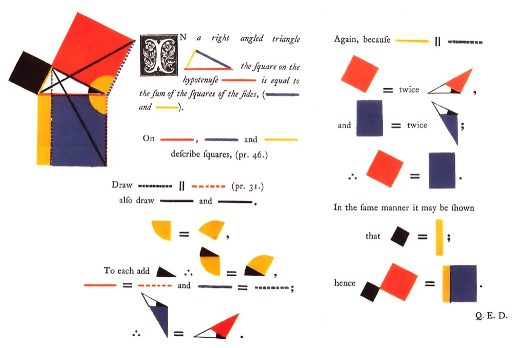

Euclid's first proof constructs an equilateral triangle without measuring a side. The equality follows from which points lie on which circle.
Euclid, usually placed in Alexandria around 300 BC, inherited a tradition of proof and earlier works called Elements. Heath's introduction, chapter IX, section 2 describes those predecessors; the biographical evidence is much thinner.
This walk follows Book I's starting assumptions, two proofs, and the problem of parallel lines. The full work has thirteen books, including number theory, proportions, and solid geometry.
Stop 1 / definitions, postulates, common notions
The starting rules
Book I starts with definitions, five postulates, and five common notions. The definitions give the vocabulary. A point is “that which has no part”; a line is “breadthless length.” These are ideal objects: a drawn dot has width and a stroke has thickness. An ideal point has no dimensions, and an ideal line has length without thickness.
The first three postulates permit constructions modeled by an unmarked straightedge and a compass. In Heath's wording:
Postulate 1
To draw a straight line from any point to any point.
Postulate 2
To produce a finite straight line continuously in a straight line.
Postulate 3
To describe a circle with any centre and distance.
Postulate 4
That all right angles are equal to one another.
Postulate 5
A condition under which two extended lines must meet. The full wording appears at stop 5.
The common notions concern equality and parts. Things equal to the same thing are equal to each other. Adding or subtracting equals preserves equality. Things that coincide are equal. The whole is greater than the part. They apply to magnitudes, including lengths, angles, and areas. Book I's definitions, postulates, and common notions occupy pages 153 to 155 of Heath's edition.
Later books add definitions. Even Book I relies on assumptions omitted here, including how points are ordered along a line and when circles intersect.
Stop 2 / Book I, Proposition 1
Construct an equilateral triangle
Heath / I.1, statement and construction excerpts
On a given finite straight line to construct an equilateral triangle.
… With centre A and distance AB let the circle BCD be described; again, with centre B and distance BA let the circle ACE be described; and from the point C, in which the circles cut one another, to the points A, B let the straight lines CA, CB be joined.
Elements I.1 · Heath, vol. 1, pp. 241 to 242Start with a segment AB of nonzero length. Draw a circle centered at A with radius AB, then one centered at B with radius BA. Choose either crossing point as C. Postulate 3 permits the circles; postulate 1 permits the segments CA and CB.
Since C lies on the circle centered at A, AC equals AB. Since it lies on the circle centered at B, BC equals BA. The segment BA is the same segment as AB. So AC and BC both equal AB, and common notion 1 makes them equal to each other. All three sides are equal: the definition of an equilateral triangle.
Changing AB's length or turning the drawing won't alter the proof.
Stop 3 / the diagram and the argument
Where the first proof needs help
Euclid has used C before establishing that C exists. Drawing each circle is allowed. Saying the circles meet requires something more. In the ordinary Euclidean plane they do meet, but the stated postulates don't guarantee the crossing.
You can supply a circle-intersection assumption, or derive the intersection from fuller axioms. Then the equality argument works. The gap concerns the construction's existence. Heath's commentary on I.1 discusses it, as does David Joyce's analysis.
Another unstated assumption appears in I.4. Euclid establishes the side-angle-side rule for triangles by superposition: placing one triangle on another so corresponding parts coincide. His opening doesn't specify what allows this comparison while preserving lengths and angles. Later axiom systems make such relationships explicit.
David Hilbert's Foundations of Geometry, first published in 1899, supplies separate groups of axioms for connections, order, parallels, congruence, and continuity. These make clearer what each proof needs.
Stop 4 / Book I, Proposition 47
Why the square areas add up
Heath / Book I, Proposition 47
In right-angled triangles the square on the side subtending the right angle is equal to the squares on the sides containing the right angle.
Elements I.47 · Heath, vol. 1, pp. 349 to 350Here, “equal” means equal in area. The square on the side opposite the right angle, the hypotenuse, has the combined area of the other two squares. For legs of length 3 and 4, those areas are 9 and 16, giving the third square area 25. That's the familiar equation a² + b² = c².
His proof divides the large square into two rectangles. In the drawing, A is the right angle. Build square BDEC on BC, then draw AL parallel to BD. It crosses BC at M and DE at L. We'll compare rectangle BDLM with the square on AB.
Join AD and FC, where F is the outside corner beside B of the square on AB. The triangles ABD and FBC have two matching pairs of sides: AB equals FB, and BD equals BC, because they are sides of squares. Their included angles match too: each is angle ABC plus a right angle. The side-angle-side result from I.4 therefore makes the triangles congruent, equal in shape and size.
Rectangle BDLM has twice the area of triangle ABD. They share base BD and have the same height between the parallel lines BD and AL. The square on AB has twice the area of triangle FBC: they share base FB, and C lies on the line through the square's opposite edge. These are applications of I.41, proved earlier.
The two triangles have equal areas, so doubling each gives equal areas for the rectangle and the square on AB. The corresponding construction on the C side gives the other rectangle the area of the square on AC. Add the rectangles, and you have the whole square on BC.

Stop 5 / the fifth postulate
The parallel postulate
Heath / Book I, Postulate 5
That, if a straight line falling on two straight lines make the interior angles on the same side less than two right angles, the two straight lines, if produced indefinitely, meet on that side on which are the angles less than the two right angles.
Elements I, postulate 5 · Heath, vol. 1, p. 155interior angles α + β less than two right angles, so the lines meet on that side
A line crosses two others. If the two interior angles on one side add to less than 180°, Euclid asks you to accept that the other lines will meet on that side when extended. The diagram shows one such case. The postulate covers intersections arbitrarily far beyond the page.
A familiar equivalent, given the usual other assumptions of plane geometry, says that through a point outside a line there is exactly one line that never meets the given line. This is often called Playfair's axiom. The condition of being in the same plane matters: lines in three-dimensional space can fail to meet without being parallel.
The first explicit use of postulate 5 comes in I.29. Earlier, I.27 establishes that equal alternate angles imply parallel lines. I.29 needs the reverse: parallel lines imply equal alternate angles. If those angles were unequal, Euclid could find interior angles adding to less than two right angles. Postulate 5 would force an intersection, contradicting the definition of parallel lines.
That distinction affects later results. The triangle angle sum in I.32 depends on I.29, and so on the fifth postulate. Its 180° conclusion carries an assumption about parallels.
Stop 6 / changing an assumption
A triangle with three right angles
This spherical triangle has three 90° angles. The projection distorts the angles on the screen.
On a sphere, follow the equator for a quarter turn. From each end go to the north pole along a meridian. The equator meets each meridian at 90°, and the meridians meet at 90° at the pole. The triangle's angle sum is 270°. Its sides are arcs of great circles, circles whose centers coincide with the sphere's center.
This is a different kind of triangle from the one in I.32. Spherical geometry uses great-circle arcs for its straight paths. It also changes more than the parallel assumption: two distinct great circles meet at two opposite points, whereas distinct straight lines in Euclidean geometry meet at most once. The sphere helps us see that geometry has alternatives; it doesn't refute Euclid's theorem or establish the independence of his fifth postulate. Tevian Dray's spherical geometry chapter develops the example.
The decisive alternative for the parallel problem was hyperbolic geometry. Lobachevsky and Bolyai independently developed it in the nineteenth century. Through a point outside a line, more than one line can fail to meet the given line. Its triangles have angle sums below 180°. Their work and the later models are described in this history of non-Euclidean geometry.
A model specifies objects and relationships that satisfy the remaining geometric axioms while the parallel axiom fails. That rules out deriving the parallel axiom from the others: a valid deduction would have to hold in the model too. The consistency result is relative. If the Euclidean mathematics used to construct the model is consistent, so is the modeled hyperbolic geometry. Hilbert gives such an argument in section 10 of his Foundations.
Stop 7 / the assumptions still matter
What a proof can settle
Spinoza's Ethics adopts definitions, axioms, numbered propositions, and demonstrations. Its first part gives definitions of substance and God, then argues from them. A reader can locate the proposed reasons, then question a definition, an axiom, or a step in the demonstration.
The same limit applies when geometry describes physical space. A mathematical proof establishes consequences of specified assumptions. To decide how well those assumptions describe a room, the Earth's surface, or astronomical distances, we need observation and measurement. The Elements doesn't supply those measurements. No chain of deductions can choose the geometry of the physical world on its own.
Text and sources
The quoted statements and construction excerpts use Thomas L. Heath's The Thirteen Books of Euclid's Elements, volume 1 (Cambridge, 1908). The short postulates retain his wording; postulate 5 is quoted in full at stop 5. The common notions above are paraphrases. Ellipses mark omitted material in I.1.
David Joyce's online Book I supplies linked proofs and commentary. It modernizes some of Heath's wording. The explanations here condense the proofs; the links provide the full arguments and their dependencies.
The figures approximate the exact relationships, and the animations select the main steps. Pixel measurements cannot establish the theorem.